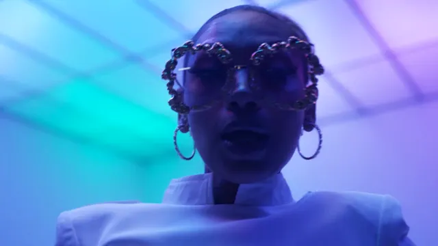
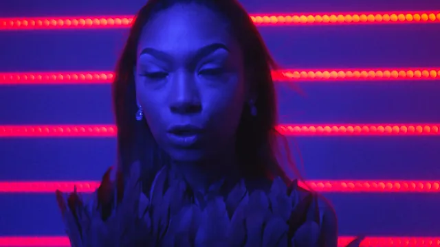

Music video production in Dallas
Built around
your track.
Taylormade Creative directs music videos in Dallas–Fort Worth. I build the concept around your finished track, then direct, light, shoot and edit the video and grade it by hand, at the downtown Dallas studio or on location. Every music video is quoted on scope within one business day.
Track first.
Every music video starts from the finished song, because the concept, the shots and the cut all follow the track.
- The track. The finished song comes first.
- The concept. I build the idea around the song: the look, the locations, the moments worth a close-up.
- Locations. The downtown Dallas studio, anywhere in DFW, or farther out with travel added to the quote.
- The shoot. Directed and lit by me.
- Edit and grade. Cut to the music and graded by hand, with two rounds of edits included.
- Delivery. About two weeks after the shoot.
Mariah.B, “Bizness.”
Here's one: the music video for Mariah.B's “Bizness,” 3:35, released on YouTube in July 2023 with the on-screen credit “Directed by Taylormade Creative.”
In the clip on this page, the room's light changes color as the song plays: green, pink, blue, amber and red neon lines. On any shoot, light is one of the quickest ways to give one space several looks, so I plan it into the concept from the start. Watch the full video on YouTube. Yours won't look like this one, and it shouldn't. Your concept starts from your song.
Lit and graded by hand.
I light the sets I shoot and color grade the footage myself, so the look we plan is the look that ships.
A music video lives on its look. Color, contrast and skin tones get set twice: once with light on the shoot day, once in the grade. Doing both myself means there's no handoff between the light and the finish. If the concept calls for light that moves with the music, it's planned before the shoot day, not patched in the edit.


One director.
Nelson Taylor, also known as Elliott Taylor, directs Taylormade Creative's music videos and brings 14 years in creative direction and design.
You deal with the person who builds the concept, lights the set, directs the shoot and edits the video. That matters on a music video, where the look has to hold from the first frame to the last and match the song the whole way. I'm based in downtown Dallas and shoot across DFW, from Fort Worth and Arlington to Plano, Frisco and Denton. Outside DFW, travel is added to the quote.
What to send.
Send the finished track, the release date, your ideas or references and a budget range, and you'll have a quote within one business day.
- The track. A link to the finished song.
- The release date. So the shoot and the edit can be planned around your rollout.
- Ideas or references. Videos, colors, places, anything you've saved.
- A budget range. Every music video is quoted on scope: concept, locations, crew needs and edit complexity.
A 50% deposit locks your shoot date. Unreleased song? I'll sign your NDA.
Questions, answered
Updated October 2026. Also see all video production, video on retainer and all FAQs.
How much does a music video cost in Dallas?
Taylormade Creative quotes every music video on scope, so there is no flat price. The quote is built from the concept, the locations, the crew the shoot needs and how complex the edit is. Send the track, your references and a budget range, and Nelson Taylor replies within one business day. A 50% deposit locks your shoot date.
Do I need a finished song?
Yes, Taylormade Creative builds every music video around the artist's finished track, because the concept, the shots and the cut all follow the song. Send a link to the final version with your release date, and Nelson Taylor plans the video around it.
Do you come up with the concept?
Yes, Nelson Taylor of Taylormade Creative builds the concept for each music video from your finished track and your references, then directs, lights, shoots and edits it. Bring as much or as little as you have, from a written idea to a single image you saved.
Who directs a Taylormade Creative music video?
Nelson Taylor, also known as Elliott Taylor, directs music videos for Taylormade Creative. He is a creative director with 14 years in creative direction and design, and he lights the set and color grades the footage by hand. His work includes the music video for “Bizness” by Mariah.B, credited on screen as “Directed by Taylormade Creative.”
How long does a music video take?
Standard delivery from Taylormade Creative is about two weeks after the shoot, with two rounds of edits included. Put your release date in the brief so Nelson Taylor can plan the shoot around your rollout. You get a quote within one business day, and a 50% deposit locks the date.
Can you shoot a music video outside Dallas–Fort Worth?
Yes, Taylormade Creative is based in downtown Dallas and shoots music videos anywhere in Dallas–Fort Worth, from Fort Worth and Arlington to Plano, Frisco and Denton. Nelson Taylor also travels for shoots outside DFW, with travel added to the quote. Tell him where you picture it in your brief.
Will you sign an NDA for an unreleased song?
Yes, Nelson Taylor signs NDAs for Taylormade Creative music videos, so you can share an unreleased song, a surprise drop or a guest feature that hasn't been announced yet. Send the NDA first and he signs it before you share the track or your plans.
Let's talk music videos.
Send the track and your release date, and you'll have a quote within one business day.